Chapter 2 · Part 1 — Rattlesnake Flats
The air was hot and dry.
Jack and Annie peeked outside.
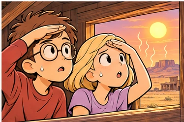
The tree house had landed in a lone tree on a prairie. The sun was low in the sky.
Right in front of them was the town from the cover of the book. In real life it looked empty and spooky.
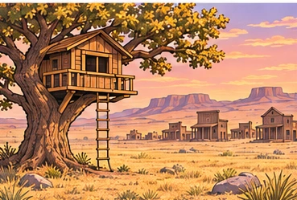
To one side of the town was a patch of ground with several tombstones.
“That’s creepy,” said Annie.
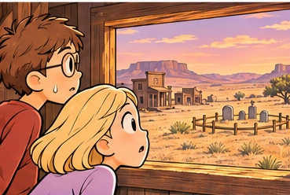
“Yeah,” said Jack. He took a deep breath. “What’s our riddle say?”
Annie held up the ancient scroll. She unrolled it. Then she and Jack read together:
Out of the blue, my lonely voice calls out to you. Who am I? Am I?
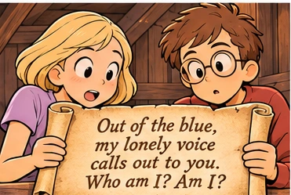
Jack pushed his glasses into place and read the riddle again to himself.
“There must be a mistake,” he said. “ ‘Am I?’ is written twice.”
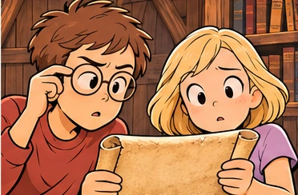
“Well, I don’t hear any voices now,” Annie said as she looked out the window.
There were no human sounds at all—only the buzzing of flies and the whistling of the dry wind.
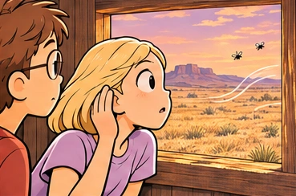
“Let’s look at the book,” Jack said.
He opened the book. The pages were yellow with age. He found a picture of the town and read the words beneath it out loud:
In the 1870s, Rattlesnake Flats was a rest stop for the stagecoach that carried passengers from Santa Fe, New Mexico, to Fort Worth, Texas. When the creek dried up, everyone left. By 1880, it was a “ghost town.”
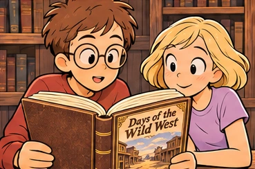
“Wow, a ghost town,” said Annie, her eyes wide.
“Let’s take a quick look around,” said Jack. “So we can leave before dark.”
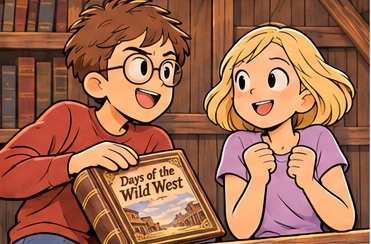
“Right,” said Annie. “Let’s hurry.” She started down the rope ladder.
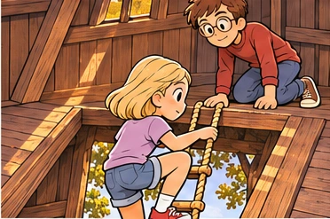
Jack put the old book into his pack. Then he followed Annie down the ladder.
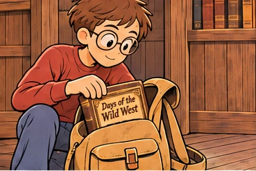
They stood by the tree and looked about. Tumbleweeds blew across the dry ground.
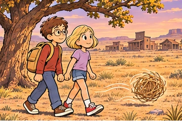
Suddenly something jumped past them.
“Yikes!” they both said.
But it was just a rabbit—a lone, long-legged rabbit hopping past them.
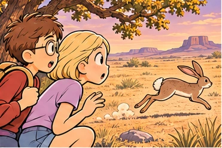
“Hey, he’s just like that rabbit we saw at home,” said Jack.
“Yeah, that rabbit must have been a sign of things to come,” said Annie.
The rabbit hopped across the prairie and out of sight.
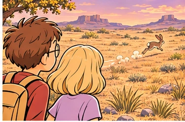
“I’d better take notes,” said Jack.
He reached into his backpack and took out his notebook and pencil.
He wrote:
rabbits with long legs
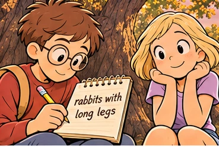
“What’s that sound?” said Annie.
“What sound?” asked Jack.
“That rattling sound!” said Annie.
Jack looked up. “What?” he said.
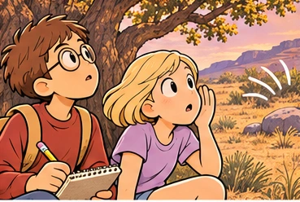
“There!” Annie pointed to a rattlesnake. It was about a hundred feet away.
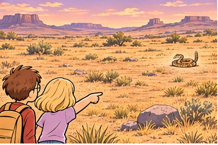